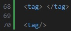
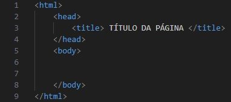
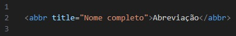
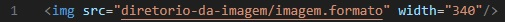
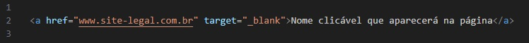

Resumidamente, todas as páginas da web são estruturadas em HTML, por isso o título desta página. Para que
o navegador interprete as informações da página, estas devem estar formatadas de uma forma específica, e
esta forma é atingida por meio das tags. Elas possuem uma estrutura similar a isto:

Dependendo do tipo de tag, algumas precisam de um fechamento (exemplo de cima) e outras são completas
por si mesmas (exemplo de baixo). Resumidamente, são uma formatação das informações contidas em um
arquivo HTML.
Existem tags fundamentais para a formação de uma página: html, head, title e body. A seguir, a forma
de sua estruturação e explicações.

Os textos inseridos em uma página também podem ser modificados. A seguir, explicações e exemplos.
Também é possível fazer um texto com mais de um destes atributos. Para isto, basta colocar múltiplas tags em um mesmo bloco de texto (desde que estejam estruturadas corretamente).
Para inserir um título dentro da página, utiliza-se a tag h, que pode variar de h1 até h6. Neste caso, h1 representa o maior título e h6 representa o menor título dentre estes seis.
A seguir, exemplos dos seis H's.
Para criar um parágrafo, utiliza-se a tag p, e o resultado é uma caixa de texto similar a esta que você está lendo.
A tag blockquote é usada para inserir um bloco de texto separado em forma de citação. Exemplo:
"Uma frase muito filosófica e instigante"
As tags hr e br servem para, respectivamente, criar uma linha separadora (como aquela no título desta página) e criar uma linha separadora em branco.
Small é uma tag que cria uma espécie de subtítulo, como estes que você vê ao longo desta página (aqui, eles exercem a função de retornar ao índice, mas não obrigatoriamente devem indicar um link).
Para abreviar algum nome, é utilizada a tag abbr, cuja estrutra básica é mostrada a seguir, junto a um exemplo (nota: desta forma, apenas a abreviatura aparece para o usuário).
DIO - Digital Inovation One
Para a inserção de imagens, a tag img é utilizada. A seguir, sua estrutura. O atributo width indica a largura da imagem. Apesar de não estar incluído no exemplo, também existe o atributo height, que indica a altura da imagem. Quando os dois são utilizados, podem distorcer a imagem se os valores formarem uma resolução diferente do arquivo original.
Para inserir um link, usa-se a estrutura a seguir. Target indica o "modo" em que o link será aberto. No caso, "_blank" indica que será aberto em uma nova aba. "_self" indica que o link será aberto na mesma aba.
Ambas possuem uma estrutura similar, e utilizam as tags ul (não ordenadas) e ol (ordenadas) para definir o tipo de lista, e li para indicar cada tópico. Os resultados, respectivamente, são algo como a seguir: